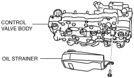

OIL STRAINER [CW6A-EL]
id0517l1355300
Purpose/Function
• The oil strainer filters particulate matter in the ATF by passing it through the built-in filter.
Construction
• The oil strainer is a built-in, non-woven fabric filter installed to the position shown in the following figure.

am2zzn00002338